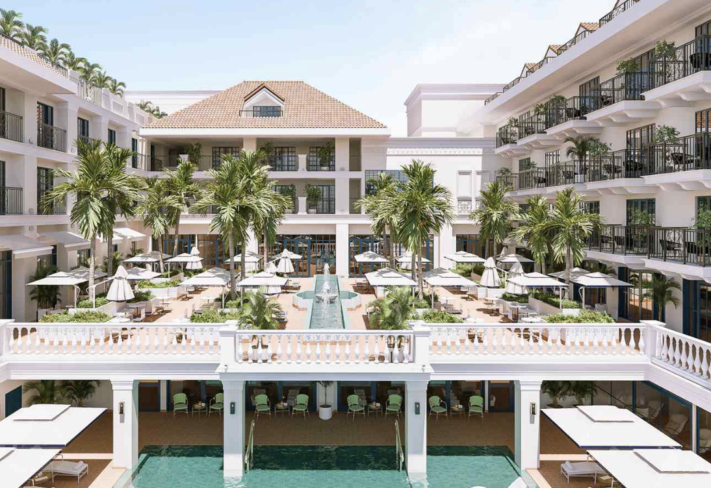

Hello! I'm Marine üß°

I am 21 years old, a student at ESSEC Business School in the BBA program. I've recently found that I coding can be fun! It's like learning a new language that helps bring my ideas to life.
Thanks to Le Wagon!Hobbies ✍️
I love drawing and watching series.
It's a great way to relax and express my creativity. My favorite TV show right now is "Oh My Venus!"
Passions üõéÔ∏è
I am passionate about the hospitality industry, discovering new cultures.
The experiences that can be conveyed are really extraordinary to me.
I also love different types of food especially Asian cuisine.
- 
Travels üåá
I am a travel addict. In the last 18 months, I lived in Oslo, Madrid, and New York.
During this period, I've also traveled to Mauritius, Iceland, San Francisco, and Switzerland.